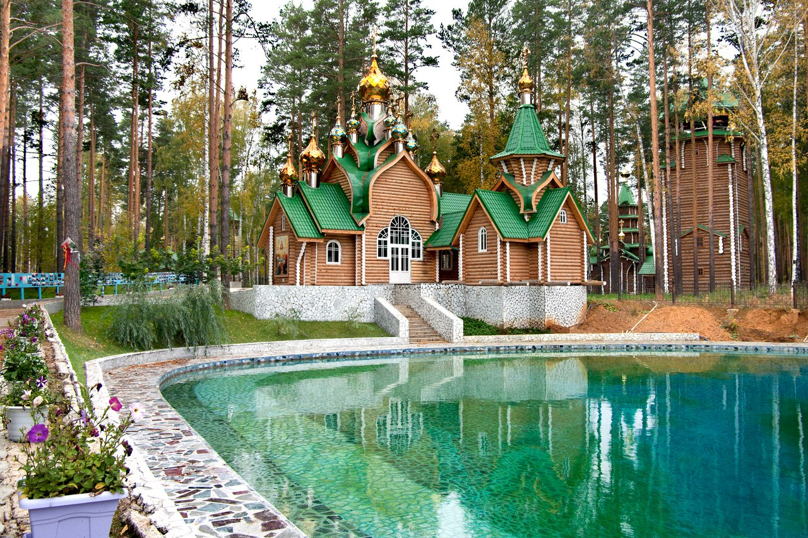
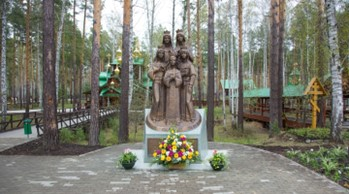

Ганина Яма
мужской монастырь
В июле 1918 года после расправы над Николаем II и его семьей их тела бросили в одну из затопленных шахт, однако, как стало известно, уже на следующую ночь большевики перепрятали их более надежно. Их закопали под настилом в Поросенковом логу на Старой Коптяковской дороге. В 1990-х годах археологи извлекли тела, и вскоре они были захоронены в Санкт-Петербурге. Как не удивительно, но церковь не признает находку ученых, считая, что тела были уничтожены на Ганиной Яме. Найденные на Коптяковской дороге тела РПЦ считают фальсификацией. Не убеждают церковь и результаты многочисленных генетических экспертиз, доказавших принадлежность находки Романовым.
В наши дни Ганину Яму посещают десятки тысяч паломников ежегодно. В то же время на более чем скромный Мемориал Романовых в Поросенковом Логу (где, в отличие от Ганиной Ямы, Романовы действительно покоились более 70 лет) бывают лишь редкие случайные посетители. Такая вот историческая несправедливость.
Но все же вернемся после этого небольшого отступления к монастырю на Ганиной Яме. 1 октября 2000 года здесь была заложена первая церковь, а 28 декабря того же года учрежден монастырь. Строительство монастыря шло быстро. Уже спустя три года на территории монастыря было семь храмов.  